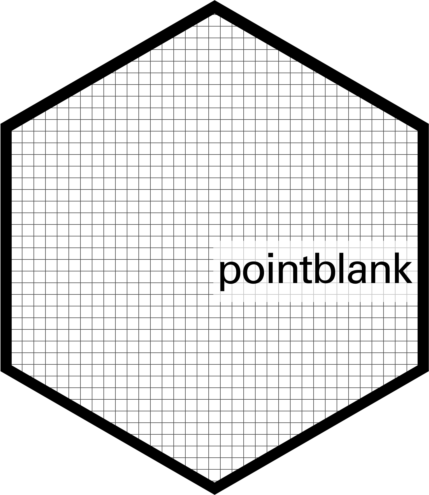

palmerpenguins: Palmer Archipelago (Antarctica) Penguin Data
The data set is from the package palmerpenguins (v0.1.1) and contains the recorded bill lengths and sex of penguins living on three islands in the Palmer Archipelago, Antarctica. It was made available by Allison Horst, Alison Hill, and Kristen Gorman under the license CC0 1.0.
Important 1: Consider Legal Restrictions Before Sharing
Everything you put into the project folder will be shared publicly. For reasons of reproducibility, this should include the data you analyze. Of course, you should only share them to the extent you are allowed to. Besides copyright and similar rights, you need to take into account applicable privacy laws (e.g., the GDPR for European citizens) and contractual obligations (e.g., with your data provider).
Privacy laws and contractual obligations may require you to create a completely anonymized or synthetic data set1 (if possible), or prohibit any sharing of data, in which case you should provide a reference to a data repository where they can be obtained from. For further information, you can watch the talk “Data anonymity” by Felix Schönbrodt recorded during the LMU Open Science Center Summer School 2023 and have a look at the accompanying slides. Another resource to look at is the presentation “Creating reproducible packages when data are confidential” by Vilhuber (2024).
Add Data Dictionary
When distributing a data set, it is important to document the meaning (e.g., units) and valid values of its variables. This is typically done with a data dictionary (also called a codebook). In the following, we will demonstrate how to create a simple data dictionary using the R package pointblank. You can install it now using:

pointblank: Data Validation and Organization of Metadata for Local and Remote Tables
Console
renv::install("pointblank")
You can put the code that follows for creating the data dictionary into a new file called create_data_dictionary.R.
First, we write down everything we know about the data set. This includes:
a general description of the data set
descriptions of all columns
valid values, where applicable
create_data_dictionary.R
table_info <-c(title ="palmerpenguins::penguins",description ="Size measurements for adult foraging penguins near Palmer Station, Antarctica")descriptions <-c(species ="a character string denoting penguin species",island ="a character string denoting island in Palmer Archipelago, Antarctica",bill_length_mm ="a number denoting bill length (millimeters)",bill_depth_mm ="a number denoting bill depth (millimeters)",flipper_length_mm ="an integer denoting flipper length (millimeters)",body_mass_g ="an integer denoting body mass (grams)",sex ="a character string denoting penguin sex",year ="an integer denoting the study year")vals <-list(species =c("Adelie", "Gentoo", "Chinstrap"),island =c("Torgersen", "Biscoe", "Dream"),sex =c("male", "female"),year =c(2007, 2008, 2009))
Depending on the type of data, it may also be necessary to describe measurement instruments, sampling procedures, appropriate weighting, applied preprocessing steps, or contact information. In our case, as the data have already been published, we only store a reference to its source.
As the data set is from the R package palmerpenguins, if you have it installed you can use the function citation() to create such a reference:
create_data_dictionary.R
dat_source <-citation("palmerpenguins", auto =TRUE) |>format(bibtex =FALSE, style ="text")
dat_source <-"Horst A, Hill A, Gorman K (2022). _palmerpenguins: Palmer Archipelago (Antarctica) Penguin Data_. R package version 0.1.1, https://github.com/allisonhorst/palmerpenguins, <https://allisonhorst.github.io/palmerpenguins/>."
Then, we use pointblank to create a data dictionary with this information.
create_data_dictionary.R
vals <-sapply(vals, \(x) {paste0("(", knitr::combine_words(x, and =" or ", before ="`", after ="`"),")" )})dat <-read.csv("data.csv")dict <- pointblank::create_informant( dat,tbl_name =NA,label = table_info[["title"]],lang ="en") |> pointblank::info_tabular(Description = table_info[["description"]],Source = dat_source ) |> pointblank::info_columns_from_tbl(stack(descriptions)[2:1]) |> pointblank::info_columns_from_tbl(stack(vals)[2:1]) |> pointblank::get_informant_report(title ="Data Dictionary for `data.csv`" )dict
Data Dictionary for data.csv
palmerpenguins::penguins
data frameRows344Columns8
Table
DESCRIPTION
Size measurements for adult foraging penguins near Palmer Station, Antarctica
SOURCE
Horst A, Hill A, Gorman K (2022). _palmerpenguins: Palmer Archipelago (Antarctica) Penguin Data_. R package version 0.1.1, https://github.com/allisonhorst/palmerpenguins, < allisonhorst.github.io palmerpenguins>.
Columns
speciescharacterINFO a character string denoting penguin species (`Adelie`, `Gentoo`, or `Chinstrap`)
islandcharacterINFO a character string denoting island in Palmer Archipelago, Antarctica (`Torgersen`, `Biscoe`, or `Dream`)
bill_length_mmnumericINFO a number denoting bill length (millimeters)
bill_depth_mmnumericINFO a number denoting bill depth (millimeters)
flipper_length_mmintegerINFO an integer denoting flipper length (millimeters)
body_mass_gintegerINFO an integer denoting body mass (grams)
sexcharacterINFO a character string denoting penguin sex (`male` or `female`)
yearintegerINFO an integer denoting the study year (`2007`, `2008`, or `2009`)
2025-01-25 22:49:28 UTC< 1 s2025-01-25 22:49:28 UTC
Finally, we can store the data dictionary inside an HTML file and put the HTML file into the project folder as well.
One could go even further by making the information machine-readable in a standardized way. We provide an optional example of that in Note 1. If you want to learn more about the sharing of research data, have a look at the tutorial “FAIR research data management”.
This example demonstrates how the title and description of the data set, the description of the variables and their valid values are stored in a machine-readable way. As before, we also provide a reference to the source.
Generally, metadata are either stored embedded into the data or externally, for example, in a separate file. We will use the “frictionless data” standard, where metadata are stored separately. Another alternative would be RO-Crate.
Specifically, one can use the R package frictionless to create a schema which describes the structure of the data.2 For the purpose of the following code, it is just a nested list that we edit to include our own information. We also explicitly record in the schema that missing values are stored in the data file as NA and that the data are licensed under CC0 1.0. Finally, the package is used to create a metadata file that contains the schema.
Console
# Read data and create schemadat_filename <-"data.csv"dat <-read.csv(dat_filename)dat_schema <- frictionless::create_schema(dat)# Add descriptions to the fieldsdat_schema$fields <-lapply(dat_schema$fields, \(x) {c(x, description = descriptions[[x$name]])})# Record valid valuesdat_schema$fields <-lapply(dat_schema$fields, \(x) {if (x$name %in%names(vals)) {modifyList(x, list(constraints =list(enum = vals[[x$name]]))) } else { x }})# Define missing valuesdat_schema$missingValues <-c("", "NA")# Create package with license info and write itdat_package <- frictionless::create_package() |> frictionless::add_resource(resource_name ="penguins",data = dat_filename,schema = dat_schema,title = table_info[["title"]],description = table_info[["description"]],licenses =list(list(name ="CC0-1.0",path ="https://creativecommons.org/publicdomain/zero/1.0/",title ="CC0 1.0 Universal" )),sources =list(list(title ="CRAN",path = dat_source )) )frictionless::write_package(dat_package, directory =".")
This creates the metadata file datapackage.json in the current directory. Make sure it is located in the same folder as data.csv, as together they comprise a data package.
Having added the data and its documentation, one can view and record the utilized packages with renv:
Console
renv::status()renv::snapshot()
Add Data Citation and Attribution
All data relied upon should be cited in the manuscript to allow for precise identification and access. From the “eight core principles of data citation” by Starr et al. (2015), licensed under CC0 1.0:
Principle 1 – Importance: “Data should be considered legitimate, citable products of research. Data citations should be accorded the same importance in the scholarly record as citations of other research objects, such as publications.”
Principle 3 – Evidence: “In scholarly literature, whenever and wherever a claim relies upon data, the corresponding data should be cited.”
Principle 5 – Access: “Data citations should facilitate access to the data themselves and to such associated metadata, documentation, code, and other materials, as are necessary for both humans and machines to make informed use of the referenced data.”
Principle 7 – Specificity and Verifiability: “Data citations should facilitate identification of, access to, and verification of the specific data that support a claim. Citations or citation metadata should include information about provenance and fixity sufficient to facilitate verifying that the specific time slice, version and/or granular portion of data retrieved subsequently is the same as was originally cited.”
Now, it’s your turn to add an appropriate citation for the data set to the manuscript. Does your citation adhere to the principles above?
Tip 1: Citing the Data Set (Solution)
You can find an appropriate BibTeX entry on the package website or with the function citation():3
citation("palmerpenguins", auto =TRUE) |>transform(key ="horst2020") |>toBibtex()
Bibliography.bib
@Manual{horst2020,title = {palmerpenguins: Palmer Archipelago (Antarctica) Penguin Data},author = {Allison Horst and Alison Hill and Kristen Gorman},year = {2022},note = {R package version 0.1.1, https://github.com/allisonhorst/palmerpenguins},url = {https://allisonhorst.github.io/palmerpenguins/},}
Copy the BibTeX entry to the file Bibliography.bib. Then, find the line in the manuscript that says “cite data here” and replace it with a sentence such as the following:
Manuscript.qmd
The analyzed data are by @horst2020.
Render the document to check that the citation is displayed properly.
Terminal
quarto render Manuscript.qmd
While citation happens in the manuscript for reasons of academic integrity and reproducibility, to comply with any licenses you also may need to provide attribution within your project folder. Even though the data file we use here does not require attribution, we recommend adding a short paragraph to LICENSE.txt:
LICENSE.txt
The penguins data stored in "data.csv" by Allison Horst, Alison Hill, and Kristen Gorman available from <https://allisonhorst.github.io/palmerpenguins/> are licensed under CC0 1.0: <https://creativecommons.org/publicdomain/zero/1.0/>
As before, if the license required adding the full license text, you would also need to copy it to the project folder (if not already in there).
Finally, you can go through the commit routine:
Terminal
git statusgit add .git commit -m"Add data"
References
Starr, J., Castro, E., Crosas, M., Dumontier, M., Downs, R. R., Duerr, R., Haak, L. L., Haendel, M., Herman, I., Hodson, S., Hourclé, J., Kratz, J. E., Lin, J., Nielsen, L. H., Nurnberger, A., Proell, S., Rauber, A., Sacchi, S., Smith, A., … Clark, T. (2015). Achieving human and machine accessibility of cited data in scholarly publications. PeerJ Computer Science, 1, e1. https://doi.org/10.7717/peerj-cs.1
In June 2024, version 2 of the frictionless data standard has been released. As of November 2024, the R package frictionless only supports the first version, though support for v2 is planned.↩︎
Note that this function requires to have the respective package installed.↩︎